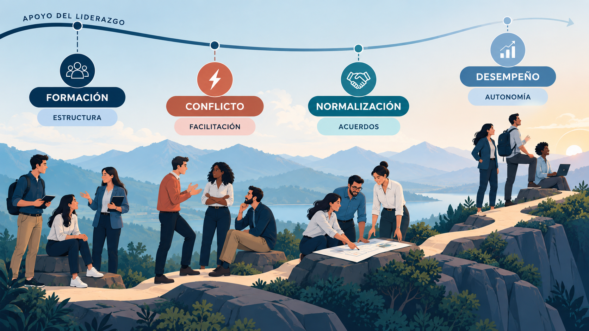
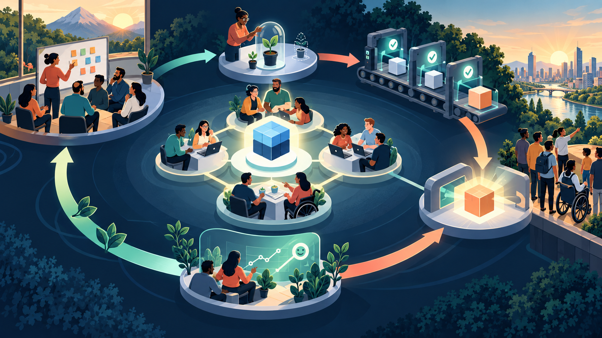
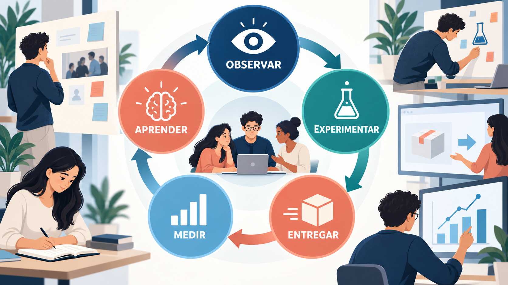

Un buen backlog y un tablero actualizado no resuelven por sí solos una discusión entre especialistas, una aprobación tardía o una respuesta incorrecta en producción. Este módulo pregunta cómo sostener el aprendizaje entre personas y dentro de la organización.
El asistente universitario reúne producto, dominio, datos, software, experiencia de usuario, evaluación y operaciones. Veremos cómo esas capacidades colaboran, cómo aprenden de incidentes y cómo deciden con evidencia.
Cómo recorrer este módulo
- Construir equipos estables, autónomos y responsables de un resultado.
- Comunicarse, gestionar conflictos y colaborar con stakeholders.
- Distinguir Sprint Review, retrospectiva y mejora continua.
- Conectar agilidad con calidad, deuda técnica, CI/CD y DevOps.
- Comprender coordinación y gobierno a escala.
- Analizar casos y cerrar el recorrido con el asistente universitario de IA.
1. Composición y estabilidad del equipo
Un equipo multidisciplinario reúne colectivamente las habilidades necesarias para crear un resultado utilizable. No significa que todas las personas sepan hacer todo ni que nunca exista una dependencia externa.
1.1 El equipo del asistente universitario
| Capacidad | Pregunta que aporta |
|---|---|
| Producto y dominio universitario | ¿Qué consulta importa y qué fuente está vigente? |
| Datos e IA | ¿Qué información utiliza el sistema y cómo se evalúa? |
| Software y operaciones | ¿Cómo se integra, protege, observa y mantiene? |
| Experiencia de usuario | ¿El estudiante comprende la respuesta y puede actuar? |
| Calidad y riesgo | ¿Qué puede fallar y qué evidencia exige el contexto? |
Las capacidades pueden residir en distintas personas. La meta es reducir transferencias y esperas, compartir conocimiento y hacer visibles las dependencias que no puedan eliminarse.
1.2 Tamaño y estabilidad
La Guía Scrum describe un Scrum Team típicamente de diez personas o menos. Es una orientación, no una fórmula para todo equipo. El tamaño debe permitir comunicación y, al mismo tiempo, reunir las habilidades necesarias.
La estabilidad favorece confianza y conocimiento compartido. Mantener a una persona imprescindible para cada componente, sin reemplazo ni documentación, produce fragilidad aunque el organigrama sea estable.
1.3 Resultado compartido
- El equipo se organiza alrededor de un objetivo, no de la ocupación individual.
- Las especialidades colaboran desde el inicio, en lugar de pasarse trabajo al final.
- La calidad y la operación forman parte del resultado.
- Los acuerdos se revisan con evidencia.
2. Autogestión y autoorganización
Declarar autonomía no define quién decide ni quién responde por el resultado. Esos acuerdos deben hacerse explícitos.
La autoorganización es, junto con la entrega iterativa de valor, uno de los pilares conceptuales más citados y más malentendidos de la agilidad. El Manifiesto Ágil establece que "las mejores arquitecturas, requisitos y diseños emergen de equipos autoorganizados", y los frameworks como Scrum insisten en que es el propio equipo de desarrollo quien decide cómo convertir el trabajo pendiente en un incremento de producto. Pero autoorganización no significa ausencia de estructura, ni cada persona haciendo lo que quiere, ni tampoco anarquía sin líderes.
2.1 Qué significa realmente
El Manifiesto habla de autoorganización; Scrum utiliza actualmente autogestión: el Scrum Team decide internamente quién hace qué, cuándo y cómo. El Product Owner responde por el valor y el orden del Product Backlog; los Developers seleccionan con él el trabajo del Sprint y deciden su plan; el equipo colabora para formular el Sprint Goal. Autonomía no significa elegir cualquier producto ni incumplir obligaciones de gobierno, pero tampoco reducir a los Developers a recibir una lista decidida por otros.
Esta autonomía acotada tiene una justificación práctica muy sólida: las personas que están más cerca del trabajo técnico —quienes escriben el código, prueban la funcionalidad, diseñan la interacción— tienen mejor información que un gerente distante sobre cuál es la forma más eficiente de resolver un problema concreto. Delegarles esa decisión no es un gesto de buena voluntad ni una moda de gestión: es, sencillamente, poner la decisión en manos de quien tiene mejor información para tomarla.
2.2 Mito 1: "Autoorganizado" es sinónimo de "sin líder"
Un equipo autoorganizado no carece de liderazgo; lo que cambia es su naturaleza. En lugar de un líder que asigna tareas y controla el avance de cada una, aparece un liderazgo distribuido y situacional: distintas personas del equipo toman la iniciativa según el problema del momento (quien más sabe de una tecnología lidera esa discusión técnica, quien tiene más visión de negocio lidera la conversación sobre prioridades). El Scrum Master, lejos de ser innecesario, cumple un rol de liderazgo de servicio fundamental para que esa autoorganización funcione: elimina obstáculos, protege al equipo de interrupciones externas y facilita que las decisiones se tomen colectivamente. Sin ese trabajo de sostén, la autoorganización tiende a degradar en caos o en el liderazgo informal de la persona con más antigüedad, que no siempre es la mejor decisión.
2.3 Mito 2: Autoorganización significa que el equipo elige qué construir
El equipo no sustituye las decisiones de estrategia, presupuesto o prioridades del Product Owner. Sí participa en comprender necesidades, proponer soluciones, formular el objetivo del Sprint y seleccionar trabajo posible. La responsabilidad de producto y el juicio técnico colaboran: “el negocio decide qué y el equipo solo cómo” resulta demasiado rígido para describir esa interacción.
2.4 Mito 3: Un equipo autoorganizado no necesita procesos ni disciplina
Todo lo contrario: los equipos autoorganizados maduros suelen tener normas de trabajo más explícitas y más respetadas que los equipos tradicionales, precisamente porque las definieron ellos mismos y no las sufren como una imposición externa. La Definición de Terminado, los acuerdos de trabajo (working agreements) y los estándares de calidad técnica son ejemplos de disciplina auto-impuesta que sostiene la autonomía, no la contradice.
2.5 Mito 4: Se llega a la autoorganización de un día para el otro
La autoorganización es una capacidad que se desarrolla con el tiempo, no un interruptor que se activa al declarar que el equipo "ahora es ágil". Un equipo que viene de años de gestión de comando y control necesita un período de transición en el que el liderazgo cede autonomía de forma progresiva mientras el equipo demuestra que puede sostenerla, y en el que se generan espacios seguros para equivocarse sin castigo. Es habitual describir esta progresión con el modelo de las etapas de un equipo (formación, conflicto, normalización, desempeño) que se retoma en la sección de comunicación y conflicto.

3. Liderazgo y decisiones del equipo
El equipo pide orientación, pero no necesita que alguien asigne cada tarea. ¿Qué intervención ayuda a tomar mejores decisiones?
El liderazgo tradicional en gestión de proyectos suele apoyarse en la figura del gerente de proyecto como punto único de planificación, asignación de tareas, control de avance y resolución de problemas. Este modelo, heredado de la gestión industrial de principios del siglo XX, funciona razonablemente bien en contextos predecibles, donde el trabajo puede descomponerse de antemano en tareas bien definidas y donde el valor de la experiencia del gerente reside en anticipar riesgos conocidos. El problema es que el desarrollo de software rara vez es tan predecible: los requerimientos cambian, la tecnología evoluciona, y la mejor forma de resolver un problema técnico muchas veces solo se descubre trabajando en él.
El liderazgo ágil parte de una premisa distinta: en contextos de alta incertidumbre, el valor del liderazgo no está en tener todas las respuestas, sino en crear las condiciones para que el equipo las encuentre, y en remover los obstáculos que le impiden avanzar. Esto no significa que el líder ágil sea pasivo o que no tome decisiones; significa que el tipo de decisiones que toma y el modo en que las toma son diferentes.
| Dimensión | Liderazgo tradicional | Liderazgo ágil / de servicio |
|---|---|---|
| Fuente de autoridad | Posición jerárquica formal | Confianza ganada y competencia reconocida por el equipo |
| Foco principal | Controlar el cumplimiento del plan | Habilitar al equipo para que decida y entregue valor |
| Distribución de decisiones | Centralizada en el líder o gerente | Distribuida, cercana a quien tiene la información |
| Relación con el error | Se evita y se sanciona; genera temor a reportar problemas | Se trata como fuente de aprendizaje dentro de un entorno seguro |
| Comunicación | Predominantemente descendente (instrucciones) | Multidireccional; el líder también escucha y pregunta |
| Medición del éxito del líder | Cumplimiento de cronograma y presupuesto | Capacidad del equipo de entregar valor de forma sostenida y autónoma |
| Rol frente a obstáculos | Escala el problema hacia arriba y espera resolución | Interviene activamente para remover el obstáculo o facilita que el equipo lo resuelva |
Es importante subrayar que estas dos formas de liderazgo no son mutuamente excluyentes de forma absoluta ni corresponden a "buenos" y "malos" gerentes: son modelos que responden a distintos grados de incertidumbre y a distintas culturas organizacionales. Un proyecto de construcción con especificaciones muy estables puede beneficiarse de un liderazgo más directivo; un producto de software en un mercado incierto necesita, en cambio, líderes que sepan delegar y adaptarse. El error frecuente en las organizaciones que adoptan agilidad es mantener el estilo de liderazgo tradicional mientras se cambian los rituales y las herramientas: se hacen Dailys y Sprints, pero el gerente sigue microgestionando cada tarea, lo cual vacía de sentido a la transformación.
3.1 Liderazgo situacional en contextos ágiles
Otra idea relevante es que el liderazgo ágil no es un estilo único y fijo, sino que se adapta al nivel de madurez del equipo. Un equipo recién formado, sin experiencia previa en agilidad, necesita más guía y estructura por parte de sus líderes (Scrum Master, coach ágil, gerente) que un equipo maduro que ya domina sus prácticas y puede autogestionarse casi por completo. El desafío del líder ágil está en reconocer en qué etapa se encuentra su equipo y ajustar el grado de acompañamiento sin caer ni en el abandono prematuro ("son autoorganizados, que se arreglen solos") ni en el control excesivo prolongado más allá de lo necesario.
4. Liderazgo de servicio
Un líder puede aportar más eliminando una espera que revisando cada tarjeta. Veamos cómo se reconoce ese servicio.
El concepto de servant leadership fue formulado por Robert K. Greenleaf en un ensayo de 1970 y, décadas más tarde, fue adoptado como el modelo de liderazgo de referencia dentro de Scrum y de buena parte de la comunidad ágil. La idea central invierte la jerarquía tradicional: el líder de servicio no está en la cima de una pirámide que dirige a quienes están debajo, sino en la base de una pirámide invertida, sosteniendo y habilitando al equipo que está por encima. La pregunta que se hace un líder de servicio no es "¿qué necesito que este equipo haga por mí?" sino "¿qué necesita este equipo de mí para hacer su mejor trabajo?".
4.1 Las responsabilidades concretas del liderazgo de servicio
- Remover obstáculos (impedimentos): identificar y resolver activamente aquello que bloquea el avance del equipo —desde un permiso de acceso que no llega, hasta un conflicto con otra área que compite por los mismos recursos— para que el equipo pueda concentrarse en su trabajo.
- Proteger el foco del equipo: filtrar interrupciones externas, solicitudes de último momento y presiones de otras áreas que ponen en riesgo el compromiso adquirido por el equipo, sin que esto signifique aislarlo de la organización.
- Desarrollar a las personas: invertir tiempo en el crecimiento profesional de cada integrante, dar feedback honesto y oportuno, y crear oportunidades de aprendizaje, en lugar de limitarse a evaluar desempeño una vez al año.
- Escuchar activamente: antes de proponer soluciones, el líder de servicio dedica tiempo genuino a entender el problema desde la perspectiva de quien lo vive, en lugar de asumir que ya sabe la respuesta.
- Construir consenso, no imponer decisiones: facilita procesos de decisión colectiva (por ejemplo, técnicas de facilitación en talleres o retrospectivas) en lugar de resolver unilateralmente cada disyuntiva.
- Practicar la persuasión antes que la autoridad: cuando necesita que el equipo o la organización avance en una dirección, el líder de servicio construye el caso y convence, en lugar de apoyarse simplemente en su cargo jerárquico.
- Tener visión y comunicarla: el liderazgo de servicio no es sinónimo de ausencia de dirección; el líder mantiene una visión clara de hacia dónde va el equipo o el producto y ayuda a que esa visión sea compartida por todos.
4.2 Servant leadership y el rol del Scrum Master
En Scrum, el Scrum Master es un líder que sirve al equipo y a la organización. Ayuda a mejorar la efectividad, eliminar impedimentos y desarrollar autogestión. No necesita presidir todas las conversaciones ni asistir obligatoriamente a la Daily: ese evento pertenece a los Developers. Puede acompañar cuando resulte útil y facilitar sin transformarse en quien recibe reportes de estado.
Un error habitual —y una señal de que el liderazgo de servicio no se comprendió— es que el Scrum Master termine actuando como un jefe de proyecto disfrazado: asigna tareas, controla horarios, reporta el avance individual de cada persona hacia arriba en la jerarquía, o presiona al equipo para que cumpla estimaciones. Cuando esto sucede, el rol pierde la confianza del equipo, porque deja de sentirse como alguien "de este lado" para pasar a percibirse como una extensión del control gerencial tradicional.
5. Comunicación efectiva
La decisión se tomó en una videollamada y quien trabaja en otro horario nunca la recibió. Colaborar también exige conservar contexto.
La agilidad depende de forma crítica de la calidad de la comunicación dentro del equipo y entre el equipo y las personas interesadas. No es casual que el segundo valor del Manifiesto Ágil privilegie "software funcionando sobre documentación extensiva": la idea no es que la documentación no importe, sino que muchas veces la comunicación directa y continua resuelve con mayor eficacia los malentendidos que un documento extenso escrito una sola vez y desactualizado a las dos semanas.
5.1 Comunicación cara a cara y comunicación asincrónica
El Manifiesto Ágil sostiene que "el método más eficiente y efectivo de transmitir información hacia y dentro de un equipo de desarrollo es la conversación cara a cara". Esto fue escrito en 2001, cuando la alternativa habitual a la conversación presencial era el correo electrónico o el documento formal; hoy, con la generalización del trabajo remoto, esa afirmación merece un matiz importante que se retoma en la sección de equipos distribuidos: la videollamada y los canales de mensajería instantánea pueden aproximarse razonablemente a esa riqueza comunicacional si se usan bien, aunque no la reemplazan del todo. Lo esencial del principio no es la presencialidad física en sí misma, sino la sincronía y la riqueza del canal: poder hacer una pregunta y recibir una respuesta inmediata, ver el lenguaje corporal o el tono de voz, y resolver ambigüedades en el momento, en lugar de esperar una cadena de correos que se extiende durante días.
5.2 Rituales como estructura de comunicación
Buena parte de los eventos de Scrum (Daily Scrum, Sprint Planning, Sprint Review, Retrospectiva) pueden entenderse, además de como mecanismos de planificación e inspección, como una infraestructura deliberada de comunicación: garantizan que ciertas conversaciones necesarias sucedan con una cadencia predecible, en lugar de depender de que alguien decida por su cuenta cuándo hace falta alinear al equipo. Esta estructura reduce la carga cognitiva de "¿cuándo debería hablar de esto?" y crea un ritmo compartido (a veces llamado cadence) que da previsibilidad tanto al equipo como a quienes dependen de él.
5.3 Radiadores de información
Los tableros visuales (físicos o digitales), los gráficos de burndown o burnup, y los paneles de métricas del equipo son ejemplos de lo que se conoce como "radiadores de información": elementos visibles que comunican el estado del trabajo sin necesidad de que alguien pregunte activamente. Un buen radiador de información reduce drásticamente la cantidad de reuniones de "status" que hacen falta, porque cualquier persona interesada puede consultar el estado actual por sí misma en cualquier momento.
5.4 Barreras comunes a la comunicación efectiva
- Jerga técnica no compartida: cuando el equipo técnico usa terminología que el Product Owner o los stakeholders de negocio no comprenden (o viceversa), se generan malentendidos que solo se descubren tarde, cuando ya es costoso corregirlos.
- Falta de seguridad psicológica: si las personas temen que decir "esto no lo voy a llegar a terminar" o "no entiendo este requerimiento" tendrá consecuencias negativas, la comunicación se vuelve superficial y los problemas reales quedan ocultos hasta que explotan.
- Exceso de canales dispersos: cuando la información relevante está repartida entre correo, chat, comentarios de una herramienta de gestión y conversaciones de pasillo, nadie tiene una visión completa y se pierden decisiones.
- Comunicación unidireccional disfrazada de diálogo: reuniones donde en teoría se busca la opinión del equipo pero en la práctica solo se informan decisiones ya tomadas, lo cual erosiona la confianza con el tiempo.
6. Gestionar conflictos
Dos especialistas proponen soluciones distintas. El desacuerdo puede mejorar el diseño si no se convierte en un ataque personal.
El conflicto dentro de un equipo no es, por definición, algo negativo. Un equipo que nunca discrepa sobre nada probablemente no está discutiendo con suficiente profundidad las decisiones importantes, o bien está reprimiendo desacuerdos reales que emergerán más tarde de forma más dañina. La gestión ágil de conflictos no busca eliminar el desacuerdo, sino canalizarlo hacia un debate productivo que mejore la decisión final, evitando que degenere en un conflicto interpersonal destructivo.
6.1 El modelo de las etapas de desarrollo de un equipo
El modelo de Tuckman propone una lectura del desarrollo grupal mediante formación, conflicto, acuerdos y desempeño. Es una orientación para reconocer necesidades de colaboración, no una secuencia obligatoria que todos los equipos atraviesan de la misma manera. Pueden reaparecer tensiones al cambiar integrantes, objetivos o contexto. No necesitamos provocar conflictos para “avanzar de etapa”: necesitamos conversaciones seguras y acuerdos revisables.
- Formación (Forming): el equipo recién se conforma, las personas son cordiales pero cautelosas, y todavía no existe suficiente confianza como para expresar desacuerdos abiertamente. El conflicto es mínimo porque todavía nadie se anima a discrepar en voz alta.
- Conflicto (Storming): a medida que el equipo empieza a trabajar en serio, emergen las diferencias de opinión, de estilo de trabajo y, a veces, de personalidad. Es la etapa más incómoda pero también la más necesaria: si se gestiona bien, el equipo sale de ella con normas de trabajo más sólidas y con mayor confianza mutua.
- Normalización (Norming): el equipo empieza a encontrar formas compartidas de trabajar, resuelve sus diferencias con mayor fluidez y desarrolla cohesión. La confianza crece y la comunicación se vuelve más honesta y directa.
- Desempeño (Performing): el equipo alcanza su mayor nivel de autonomía y productividad, resuelve conflictos de forma casi automática usando las normas que desarrolló, y puede concentrarse plenamente en el trabajo.
- Disolución (Adjourning): etapa agregada posteriormente por Tuckman, relevante cuando el equipo se disuelve al terminar un proyecto (algo cada vez menos frecuente en agilidad, que favorece equipos estables, como se vio en la sección 1).
La implicancia práctica de este modelo para un Scrum Master o líder ágil es doble: primero, entender que la etapa de "Storming" es esperable y no una señal de fracaso, sino un paso necesario hacia la madurez del equipo; segundo, saber que cada cambio significativo en la composición del equipo (incorporar o quitar una persona) puede hacer retroceder parcialmente al grupo a etapas anteriores, lo cual refuerza el valor de la estabilidad de los equipos.
6.2 Técnicas para gestionar conflictos
- Separar la posición del interés: técnica proveniente de la negociación, que consiste en indagar por qué cada persona sostiene su postura (el interés real) en lugar de discutir únicamente sobre la postura declarada (la posición), lo cual muchas veces revela que existe una solución que satisface a ambas partes.
- Establecer acuerdos de trabajo (working agreements): reglas explícitas que el equipo define en conjunto sobre cómo quiere trabajar (horarios de disponibilidad, cómo se revisa el código, cómo se toman decisiones) que sirven como referencia neutral cuando surge un desacuerdo sobre "cómo deberíamos hacer esto".
- Facilitación neutral: cuando el conflicto involucra a dos o más personas del equipo, contar con alguien (a menudo el Scrum Master) que facilite la conversación sin tomar partido ayuda a que ambas partes se sientan escuchadas.
- Retrospectivas como válvula regular: en lugar de esperar a que un conflicto escale, la cadencia regular de retrospectivas ofrece un espacio legítimo y esperado para plantear tensiones antes de que se agraven.
- Escalamiento apropiado: no todos los conflictos deben resolverse dentro del equipo; cuando involucran cuestiones de desempeño individual serio o de conducta, corresponde escalarlos a quien tenga la responsabilidad de gestión de personas, sin que esto sea percibido como un fracaso del equipo.
7. Feedback continuo
“Tenés que comunicar mejor” no indica qué cambiar. Una observación concreta permite probar otra conducta.
La agilidad, en su núcleo, es un mecanismo de aprendizaje continuo a través de ciclos cortos de retroalimentación: se construye algo pequeño, se lo muestra, se recibe feedback, se ajusta. Esta lógica que aplicamos al producto (mostrar un incremento en la Sprint Review y ajustar el backlog) es igual de válida para las personas y para el propio proceso de trabajo del equipo. Una cultura de feedback continuo es aquella en la que dar y recibir retroalimentación honesta, específica y oportuna es parte normal del trabajo diario, y no un evento formal y temido que ocurre una vez al año en una evaluación de desempeño.
7.1 Por qué el feedback anual no alcanza
Los modelos tradicionales de gestión de desempeño, basados en una evaluación anual, tienen un problema estructural evidente en contextos ágiles: para cuando llega la evaluación, la situación que se quiere corregir puede haber ocurrido meses atrás, la persona ya no recuerda con claridad el contexto, y ya no hay oportunidad de ajustar el comportamiento a tiempo para el proyecto en curso. El feedback pierde valor cuando se demora: la retroalimentación es más útil cuanto más cerca está en el tiempo del hecho que la origina.
7.2 Características de un feedback efectivo
- Específico, no general: "en la reunión con el cliente de ayer, cuando interrumpiste dos veces mientras explicaba el problema, dio la impresión de que no estábamos escuchando" es más útil y más accionable que "tenés que mejorar tu comunicación".
- Oportuno: dado lo más cerca posible del momento en que ocurrió la situación, mientras el contexto sigue fresco para ambas partes.
- Centrado en el comportamiento observable, no en la persona: describe una acción concreta y su efecto, en lugar de hacer juicios sobre el carácter o la intención de quien lo recibe.
- Bidireccional: una cultura sana de feedback no es solo "de arriba hacia abajo"; incluye que el equipo pueda dar feedback a sus líderes, y que los pares se lo den entre sí con la misma naturalidad.
- Equilibrado entre reconocimiento y oportunidad de mejora: reconocer explícitamente lo que funciona bien es tan importante como señalar lo que se puede mejorar; una cultura que solo señala errores termina generando defensividad y ocultamiento de problemas.
7.3 Técnicas concretas
- Feedback 1 a 1 regular: conversaciones individuales periódicas (semanales o quincenales) entre cada integrante y su líder o Scrum Master, dedicadas específicamente a escuchar cómo está la persona y dar/recibir retroalimentación, separadas de las reuniones de coordinación del trabajo.
- La técnica SBI (Situación-Comportamiento-Impacto): estructura simple para dar feedback describiendo primero la situación concreta, luego el comportamiento observado, y finalmente el impacto que tuvo, evitando así juicios generales.
- Feedback entre pares en revisión de código y trabajo técnico: prácticas como la revisión de código (code review) o la programación en pareja incorporan el feedback técnico como parte natural del flujo de trabajo, no como un evento aparte.
- Retrospectivas como feedback colectivo sobre el proceso: el equipo se da feedback a sí mismo como sistema, no solo entre individuos, sobre cómo está funcionando su forma de trabajar.
- Feedback ascendente estructurado: encuestas anónimas periódicas o espacios habilitados donde el equipo puede darle feedback a su Scrum Master, Product Owner o líder de forma segura, sin temor a represalias.
7.4 Feedback sobre resultados de IA
“El modelo alucina” es demasiado general para actuar. Un reporte útil conserva la consulta, la respuesta, la fuente esperada, el contexto y el impacto. El equipo evita incluir datos personales innecesarios y distingue un defecto reproducible de una percepción aislada.
8. Colaboración con interesados
El equipo puede hablar con usuarios sin aceptar cada pedido como una orden de trabajo. La relación necesita claridad y confianza.
La gestión de stakeholders (personas o grupos interesados en el proyecto, que pueden afectarlo o verse afectados por él) suele estudiarse desde la perspectiva del Product Owner y de la gestión del backlog: quién define prioridades, quién aprueba el alcance, a quién se le muestra el incremento. En este módulo la miramos desde un ángulo complementario: cómo el equipo y su liderazgo gestionan la relación cotidiana con esas personas interesadas, más allá de las decisiones de producto.
8.1 Mapeo de stakeholders
Una práctica habitual es clasificar a los stakeholders según su nivel de interés en el proyecto y su nivel de influencia o poder sobre él, típicamente representados en una matriz de dos ejes. Esto permite decidir el nivel y el tipo de comunicación adecuado para cada grupo: a quienes tienen alto interés y alta influencia (por ejemplo, un patrocinador ejecutivo) se les dedica atención cercana y frecuente; a quienes tienen alta influencia pero bajo interés cotidiano se los mantiene informados con resúmenes ejecutivos periódicos sin saturarlos de detalle operativo; a quienes tienen alto interés pero baja influencia formal (por ejemplo, usuarios finales) se los involucra activamente en la validación del producto, aunque no tengan poder de decisión sobre el alcance.
8.2 El equipo como interlocutor directo
Uno de los cambios culturales más significativos que trae la agilidad es que el equipo técnico deja de estar completamente aislado detrás de un gerente de proyecto que "traduce" entre negocio y tecnología, y pasa a tener contacto más directo con quienes usan o encargan el producto —por ejemplo, participando de la Sprint Review o de sesiones de validación de producto—. Esto tiene ventajas claras (el equipo entiende mejor el problema real, se reduce el "teléfono descompuesto" de requerimientos mal transmitidos) pero también exige del equipo y de su liderazgo nuevas habilidades: comunicar avances y limitaciones técnicas en lenguaje comprensible para quien no es técnico, manejar expectativas de forma honesta, y sostener conversaciones difíciles (por ejemplo, explicar por qué algo llevará más tiempo del esperado) sin que el gerente de proyecto actúe de intermediario amortiguador.
8.3 Gestión de expectativas y transparencia
La confianza de los stakeholders en un equipo ágil se construye menos a partir de promesas cumplidas al pie de la letra (algo difícil de garantizar en contextos de incertidumbre) y más a partir de la transparencia sostenida sobre el estado real del trabajo, incluidas las malas noticias. Un equipo que comunica tempranamente un riesgo o un atraso genera más confianza a largo plazo que uno que reporta "todo en verde" hasta el último momento y luego sorprende con un incumplimiento. El liderazgo ágil tiene la responsabilidad de modelar y sostener esta transparencia, incluso cuando resulta incómoda, y de proteger al equipo de la presión que a veces empuja a maquillar reportes de estado para evitar conversaciones difíciles.
9. Trabajo remoto y equipos distribuidos
Copiar la jornada presencial a una sucesión de videollamadas no resuelve coordinación ni pertenencia.
El trabajo remoto y los equipos distribuidos geográficamente —ya sea entre distintas ciudades de un mismo país o entre distintos países y husos horarios— se volvieron la norma en buena parte de la industria del software, especialmente después de la aceleración que trajo la pandemia de 2020. La agilidad, que originalmente se pensó y documentó asumiendo mayoritariamente equipos colocados en un mismo espacio físico, tuvo que adaptar muchas de sus prácticas a este nuevo contexto.
9.1 Principales desafíos
- Pérdida de comunicación informal: gran parte del conocimiento compartido y de la resolución rápida de dudas en un equipo colocado ocurre en conversaciones espontáneas de pasillo o de cafetería, que simplemente no existen de la misma manera en remoto. Esa pérdida no siempre es visible hasta que empieza a generar malentendidos o retrabajo.
- Zonas horarias y ventanas de solapamiento reducidas: cuando el equipo está distribuido en husos horarios muy distintos, la cantidad de horas en las que todos pueden coincidir en vivo se reduce drásticamente, lo cual obliga a apoyarse más en comunicación asincrónica.
- Fatiga de videollamadas: el exceso de reuniones por videollamada genera cansancio cognitivo distinto al de las reuniones presenciales, y puede llevar a que las personas participen con menor energía o con la cámara apagada, reduciendo la riqueza de la interacción.
- Dificultad para detectar señales de alerta temprana: un Scrum Master presencial puede notar por el lenguaje corporal que alguien está bloqueado, frustrado o sobrecargado; en remoto esas señales son mucho más difíciles de percibir si no se generan espacios explícitos para que emerjan.
- Riesgo de aislamiento y menor sentido de pertenencia: especialmente para quienes se incorporan a un equipo ya formado, trabajar en remoto puede dificultar el desarrollo de vínculos de confianza que en presencialidad surgen con mayor naturalidad.
9.2 Buenas prácticas para equipos distribuidos
- Documentación como registro compartido, no como sustituto de la conversación: mantener actualizada la información relevante (decisiones, definiciones, acuerdos) en un espacio accesible por todos ayuda a compensar la pérdida de comunicación informal y permite que quien trabaja en otro huso horario se ponga al día sin depender de una reunión sincrónica.
- Priorizar la comunicación asincrónica cuando sea posible: usar mensajería, documentos colaborativos y grabaciones de video en lugar de forzar reuniones sincrónicas para todo, reservando el tiempo en vivo compartido para las conversaciones que realmente lo requieren (discusión de decisiones complejas, resolución de conflictos, construcción de relación).
- Diseñar deliberadamente los rituales para el formato remoto: por ejemplo, usar herramientas colaborativas visuales (tableros digitales) en la Retrospectiva para que la participación sea pareja entre quienes están en la sala y quienes se conectan remoto, en lugar de que los presenciales dominen la conversación.
- Crear espacios explícitos para lo informal: instancias no estructuradas de "café virtual" o tiempo social al inicio de las reuniones, que reemplacen parcialmente la charla espontánea que ocurre naturalmente en un espacio físico compartido.
- Rotar los horarios de reunión cuando hay husos horarios muy distintos: para que el costo de reunirse fuera del horario habitual no recaiga siempre sobre el mismo subgrupo del equipo.
- Reforzar la Definición de Terminado y la visibilidad del trabajo: en equipos distribuidos, un tablero de trabajo actualizado y una Definición de Terminado clara son aún más importantes, porque compensan la menor visibilidad informal del progreso de cada persona.
Bloque Aprendizaje y mejora. Distinguí inspeccionar el producto de mejorar la forma de trabajar.
10. Sprint Review: inspeccionar y adaptar el producto
El incremento está terminado. Ahora hay que averiguar qué aprendemos de él y qué decisión de producto cambia.
La Sprint Review es uno de los cinco eventos de Scrum; los otros son Sprint, Planning, Daily y Retrospectiva y ocurre al final de cada sprint. Aunque en muchos equipos se la conoce coloquialmente como "la demo", reducirla a una demostración de funcionalidades es un error conceptual frecuente que le quita buena parte de su valor real.
10.1 Objetivo de la Sprint Review
El propósito formal de la Sprint Review, según la Guía Scrum, es inspeccionar el resultado del sprint y determinar adaptaciones futuras. Es decir, no se trata únicamente de mostrar lo que el equipo construyó, sino de generar una conversación colaborativa entre el equipo, el Product Owner y los stakeholders sobre el estado del producto, el contexto de mercado o negocio que pudo haber cambiado, y las prioridades del trabajo que viene a continuación. Es, en esencia, una revisión del producto y del plan, no solo del código.
10.2 Dinámica típica de una Sprint Review efectiva
- El Product Owner comienza explicando qué elementos del Sprint Backlog se completaron y cuáles no, con transparencia sobre lo que quedó pendiente y por qué.
- El equipo de desarrollo presenta el trabajo terminado, idealmente mostrando el producto funcionando en un entorno lo más cercano posible al real, y responde preguntas sobre decisiones técnicas relevantes.
- Se invita activamente a los stakeholders presentes a dar su opinión, probar la funcionalidad si es posible, y plantear inquietudes o nuevas necesidades que hayan surgido.
- El grupo conversa sobre el estado general del proyecto en relación con la fecha, el presupuesto o el mercado, y sobre qué se hará a continuación, actualizando el Product Backlog si corresponde.
- Se trata de una sesión de trabajo colaborativa, no de una presentación unidireccional con diapositivas preparadas de antemano; la Guía Scrum explícitamente la describe como una reunión de trabajo, no una presentación de estado.
10.3 Diferencias entre una Sprint Review y una demo tradicional
| Aspecto | Demo tradicional | Sprint Review |
|---|---|---|
| Dirección de la comunicación | Unidireccional: el equipo muestra, la audiencia observa | Colaborativa: se espera participación activa y feedback en tiempo real |
| Contenido | Solo funcionalidades terminadas y pulidas | Incluye también lo que no se completó, y el contexto de negocio que cambió |
| Resultado esperado | Aprobación o aplauso | Ajustes concretos al Product Backlog y a las prioridades futuras |
| Preparación | Guion armado, a veces con datos de prueba artificiales | Puede ser más informal; se valora mostrar el producto real por sobre la puesta en escena |
| Frecuencia | Variable, a menudo ligada a hitos grandes | Cadencia fija, al final de cada sprint |
Cuando una Sprint Review se convierte en una demo tradicional —una presentación pulida y unidireccional donde nadie cuestiona nada ni propone cambios— pierde su función de inspección y adaptación, que es justamente lo que la distingue como evento ágil. Es una de las señales más claras de agilidad superficial ("teatro ágil"): se conserva el nombre del evento, pero se vacía su propósito real.
11. Sprint Retrospective: mejorar la forma de trabajar
Analogía: revisar una receta después de cocinar. En la Review conversamos con quienes probaron el plato: si resuelve la ocasión, qué necesitan y qué conviene ofrecer después. En la Retrospective observamos cómo trabajó la cocina: esperas, coordinación, herramientas y calidad. Las conversaciones pueden relacionarse, pero sus propósitos son distintos. En un equipo, la retrospectiva produce una mejora concreta con seguimiento; no se limita a opinar si la experiencia fue agradable.
La misma queja aparece por tercera vez. Una retrospectiva útil debe producir una intervención que podamos comprobar.
Si la Sprint Review inspecciona el producto, la Retrospectiva inspecciona al propio equipo y su forma de trabajar. Es, posiblemente, el evento más directamente vinculado con la mejora continua dentro de Scrum, y su ausencia (o su realización mecánica y sin real reflexión) es uno de los indicadores más confiables de que un equipo está haciendo agilidad de nombre pero no de fondo.
11.1 Por qué importan las retrospectivas
Las retrospectivas encarnan de forma muy concreta el principio de mejora continua: en lugar de esperar a que un consultor externo diagnostique qué está fallando en el equipo, son los propios integrantes quienes, con una cadencia regular, se detienen a examinar su trabajo reciente y deciden qué ajustar. Esto tiene varias ventajas sobre los procesos tradicionales de mejora de procesos (auditorías anuales, revisiones de calidad externas): la frecuencia es mucho mayor (al finalizar cada Sprint, con duración de un mes o menos), quienes proponen los cambios son quienes deberán vivir con ellos (lo cual mejora la adopción real), y los ajustes son pequeños e incrementales, lo cual reduce el riesgo de cambios de proceso mal calibrados.
11.2 Estructura general de una retrospectiva
Independientemente del formato específico que se use, una buena retrospectiva suele seguir una estructura de cinco fases, popularizada por Esther Derby y Diana Larsen: preparar el terreno (generar un clima seguro para hablar con honestidad), recolectar datos (reconstruir lo sucedido en el período, con hechos y percepciones), generar ideas (explorar por qué pasó lo que pasó), decidir qué hacer (seleccionar un número reducido de acciones concretas, no una lista interminable de buenas intenciones) y cerrar la retrospectiva (agradecer la participación y confirmar los compromisos).
11.3 Formatos habituales de retrospectiva
| Formato | Cómo funciona | Cuándo conviene usarlo |
|---|---|---|
| Start-Stop-Continue | El equipo enumera qué prácticas debería empezar a hacer, cuáles debería dejar de hacer, y cuáles debería seguir haciendo porque funcionan bien. | Formato simple y directo, ideal para equipos nuevos en retrospectivas o cuando se dispone de poco tiempo. |
| 4Ls (Liked, Learned, Lacked, Longed for) | El equipo reflexiona sobre qué le gustó del período, qué aprendió, qué sintió que faltó, y qué desea para el futuro. | Aporta una mirada más emocional y de aprendizaje que el Start-Stop-Continue; útil cuando se quiere profundizar en el clima del equipo. |
| Sailboat (Velero) | Se usa la metáfora de un barco navegando: el viento son las fuerzas que impulsan al equipo, el ancla son los frenos, las rocas los riesgos por delante, y la isla el objetivo compartido. | Muy visual y útil para equipos que se benefician de metáforas gráficas, o cuando se busca conectar el detalle operativo con una visión de más largo plazo. |
| Mad-Sad-Glad | El equipo clasifica los hechos del período según la emoción que generaron: qué los enojó, qué los entristeció, qué los alegró. | Especialmente útil después de un sprint con mucha carga emocional (crisis, conflicto, gran logro), porque da lugar explícito a procesar lo vivido. |
| Retrospectiva de línea de tiempo (Timeline) | Se reconstruye cronológicamente el período marcando hitos, hechos positivos y negativos a lo largo de una línea de tiempo compartida. | Útil en periodos largos o con muchos eventos (por ejemplo, un release complejo), donde conviene primero reconstruir los hechos antes de analizarlos. |
Más allá del formato elegido, dos recomendaciones son transversales a todos ellos: primero, variar el formato de tanto en tanto para evitar que la retrospectiva se vuelva mecánica y previsible (algo que erosiona la participación genuina con el tiempo); segundo, cerrar siempre con un número acotado de acciones concretas y asignadas —no más de dos o tres— porque una lista larga de "cosas para mejorar" que nadie revisa después es peor que no hacer retrospectiva, ya que genera la sensación de que el ejercicio no sirve para nada.
11.4 El Acuerdo Primario (Prime Directive)
Una condición previa para que cualquier formato de retrospectiva funcione es lo que Norman Kerth llamó el "Acuerdo Primario": la premisa explícita de que, independientemente de lo que se descubra, todos hicieron el mejor trabajo posible dado lo que sabían en ese momento, las habilidades y los recursos disponibles, y la situación que enfrentaban. Este acuerdo no busca evitar la crítica honesta, sino orientarla hacia el sistema y el proceso, en lugar de hacia la búsqueda de un culpable individual, lo cual es indispensable para que las personas hablen con franqueza sin temor a ser señaladas.
11.5 Ejemplo resuelto: transformar una queja en experimento
En TurnoYa se repite “las revisiones tardan demasiado”. El equipo observa cinco cambios terminados: sus esperas de revisión fueron 1, 2, 2, 3 y 7 días, con mediana de 2. Decide probar durante un Sprint una política: cada día alguien revisa las solicitudes abiertas y se evita acumular cambios muy grandes. Se define quién registra las fechas y se compara espera, defectos y carga de trabajo al finalizar. Si la espera baja pero aumentan errores, la intervención debe revisarse. Una muestra pequeña y un solo Sprint no demuestran causalidad; sí permiten aprender y decidir el siguiente ajuste.
12. Mejora continua y Kaizen
Una acción pequeña con hipótesis y medida permite aprender más que una lista extensa de deseos.
El concepto de Kaizen —palabra japonesa que combina "kai" (cambio) y "zen" (bueno), y que suele traducirse como "mejora continua" o "cambio para mejor"— tiene su origen en los sistemas de producción industrial japoneses de posguerra, particularmente en el Sistema de Producción Toyota, y fue una de las influencias filosóficas directas sobre Lean y, a través de Lean, sobre buena parte del pensamiento ágil.
12.1 Principios centrales del Kaizen
- Mejora en pequeños pasos, de forma constante: a diferencia de las grandes reingenierías de proceso que se implementan de una vez, el Kaizen favorece ajustes pequeños, frecuentes y de bajo riesgo, sostenidos en el tiempo. La suma de muchas mejoras pequeñas termina generando un cambio acumulado mayor —y más sostenible— que una transformación radical impuesta desde arriba.
- La mejora es responsabilidad de todos, no solo de un área de calidad o de procesos: quien mejor conoce un problema es quien lo enfrenta cotidianamente, por lo que el Kaizen involucra activamente a quienes hacen el trabajo diario en identificar oportunidades de mejora, en lugar de reservar esa función a especialistas externos.
- Se basa en observar el proceso real, no en supuestos: conceptos como el "Gemba" (el lugar real donde ocurre el trabajo) enfatizan la importancia de observar directamente cómo se hacen las cosas, en lugar de discutir mejoras solamente desde una oficina alejada del trabajo concreto.
- Ciclo PDCA (Plan-Do-Check-Act): el Kaizen se apoya en el ciclo de mejora de Deming: planificar un cambio, ejecutarlo a pequeña escala, verificar su efecto, y actuar en consecuencia (adoptarlo, ajustarlo o descartarlo), repitiendo el ciclo de forma indefinida.
12.2 Kaizen y retrospectivas
La conexión entre el Kaizen y la Retrospectiva de Scrum es directa: la Retrospectiva es, en esencia, la implementación concreta del ciclo de mejora continua dentro del marco Scrum. Cada retrospectiva es, en pequeño, un ciclo PDCA: se identifica una oportunidad de mejora (a partir de lo que pasó en el sprint anterior), se planifica un cambio pequeño y concreto, se lo prueba durante el sprint siguiente, y en la próxima retrospectiva se revisa si funcionó. Esta cadencia corta es lo que distingue a la mejora continua ágil de los programas de mejora de procesos tradicionales, que suelen operar con ciclos mucho más largos (trimestrales o anuales) y, por lo tanto, con una capacidad de aprendizaje mucho más lenta.
12.3 Kaizen aplicado más allá del proceso: el producto y la arquitectura técnica
Si bien el Kaizen suele asociarse principalmente con la mejora del proceso de trabajo, en el desarrollo de software se aplica igualmente a la calidad técnica del producto. Prácticas como la refactorización continua de código (mejorar el diseño interno del software sin cambiar su comportamiento externo) o la reducción incremental de deuda técnica son expresiones directas de la filosofía Kaizen aplicadas al propio producto de software: en lugar de posponer la mejora técnica para un gran proyecto de "reescritura" futuro (que rara vez llega a concretarse o justificarse ante el negocio), se van incorporando pequeñas mejoras de calidad en el trabajo cotidiano.


12.4 Caso resuelto: transformar una retrospectiva repetitiva en mejora verificable
Un equipo remoto repite hace tres Sprints la misma queja: “la comunicación con negocio falla”. La retrospectiva produce listas extensas, pero ninguna acción cambia el siguiente Sprint.
- Reemplazar opiniones generales por hechos. El equipo reconstruye una línea de tiempo y encuentra cuatro historias detenidas más de dos días por criterios de aceptación ambiguos.
- Separar síntoma e hipótesis. El problema no parece ser “falta de comunicación” en abstracto, sino que dudas críticas se descubren después de iniciar el trabajo y no existe un canal con tiempo de respuesta acordado.
- Diseñar un experimento pequeño. Durante un Sprint, Product Owner y una persona de calidad revisarán criterios de las tres historias próximas; las dudas bloqueantes tendrán respuesta en la misma jornada laboral.
- Asignar responsabilidad y medida. El Scrum Master registra antigüedad de bloqueos; el equipo espera reducir de cuatro a no más de una las historias detenidas por ambigüedad.
- Proteger seguridad psicológica. Se evalúa el sistema de trabajo, no quién “comunicó mal”. Esto permite incluir al Product Owner sin convertir la retro en búsqueda de culpables.
- Inspeccionar en la próxima retrospectiva. Si bajan los bloqueos, la política se incorpora al acuerdo de trabajo; si no, se revisa la hipótesis y se prueba otra intervención.
Resultado: la mejora deja de ser una intención y se convierte en un ciclo Kaizen completo: observar, formular, probar, medir y adaptar.
Bloque Calidad y entrega. Conectá acuerdos de calidad con prácticas que permiten entregar cambios confiables.
13. Calidad y deuda técnica
La presión del piloto invita a posponer verificaciones. ¿Qué costo estamos trasladando y quién lo está viendo?
La calidad debe planificarse y construirse desde el inicio en cualquier enfoque. Posponer toda verificación hasta el final puede acumular retrabajo, pero no es una obligación de la gestión predictiva. En software ágil buscamos feedback técnico frecuente, pruebas proporcionales al riesgo y un incremento que cumpla la DoD. Esa cadencia no permite omitir validaciones regulatorias ni controles especializados.
13.1 Calidad integrada al flujo de trabajo
En un equipo ágil maduro, las actividades de aseguramiento de calidad no están separadas temporalmente del desarrollo, sino entrelazadas con él: las pruebas se escriben junto con el código (o incluso antes, como en el desarrollo guiado por pruebas), la revisión de código ocurre antes de integrar cada cambio, y la automatización de pruebas permite verificar continuamente que el sistema sigue funcionando correctamente a medida que crece. Esto no elimina la necesidad de perfiles especializados en testing, pero cambia su forma de trabajar: en lugar de recibir el producto terminado al final para buscar errores, participan desde el inicio ayudando a definir criterios de aceptación claros y diseñando estrategias de prueba junto con el resto del equipo.
13.2 La Definition of Done como estándar explícito
Como se estudió en módulos anteriores, la Definición de Terminado (Definition of Done) establece un estándar de calidad explícito y compartido que todo incremento debe cumplir antes de considerarse completo: por ejemplo, que el código esté probado, revisado por un par, integrado, documentado según los estándares del equipo y sin defectos incompatibles con el estándar de calidad acordado. Su función principal en términos de calidad es evitar que se acumule "trabajo casi terminado" que en realidad esconde problemas de calidad no resueltos, y asegurar que lo que el equipo llama "terminado" realmente lo esté, sin ambigüedad ni negociación caso por caso.
13.3 Calidad y deuda técnica
La deuda técnica —un concepto introducido por Ward Cunningham como metáfora de las decisiones de diseño que se toman para avanzar más rápido a corto plazo, a costa de mayor esfuerzo de mantenimiento en el futuro— es una tensión permanente en proyectos ágiles, especialmente bajo presión de plazos ajustados. Igual que una deuda financiera, la deuda técnica no es intrínsecamente mala (a veces es una decisión consciente y razonable tomar un atajo para validar rápido una hipótesis de negocio), pero se vuelve peligrosa cuando se acumula sin control ni visibilidad, porque termina ralentizando cada vez más al equipo (el llamado "interés" de la deuda) hasta un punto en que agregar cualquier funcionalidad nueva se vuelve lento y riesgoso. La gestión sana de la deuda técnica implica hacerla visible (registrarla, no esconderla), decidirla conscientemente en lugar de que ocurra por descuido, y destinar una porción regular de la capacidad del equipo a reducirla, en lugar de posponerla indefinidamente.
13.4 La deuda oculta de los sistemas de IA
Un modelo es solo una parte del producto. Datos, configuraciones, dependencias y consumidores pueden acumular deuda difícil de ver. La investigación sobre deuda técnica en sistemas de aprendizaje automático documenta riesgos como dependencias de datos y bucles de retroalimentación.
Para el asistente, la DoD puede exigir versionar las fuentes, registrar el conjunto de evaluación, controlar permisos y preparar observabilidad. Mejorar el modelo sin mantener ese sistema puede aumentar complejidad sin mejorar el servicio.
14. Integración, entrega y despliegue continuos
El código está integrado, pero lanzar lleva varios días de trabajo manual. Acortar el ciclo exige mirar el sistema de entrega.
La Integración Continua y la Entrega/Despliegue Continuo —conocidas habitualmente por su sigla en inglés, CI/CD— son prácticas de ingeniería de software que, sin ser exclusivas de la agilidad, resultan prácticamente indispensables para sostenerla a escala, porque son el mecanismo técnico que permite que los ciclos cortos de entrega e inspección que promueve la agilidad sean realmente posibles en la práctica, y no solo una aspiración de proceso.
14.1 Integración Continua (CI)
La Integración Continua consiste en que cada integrante del equipo integre su trabajo (el código que produce) al repositorio compartido con mucha frecuencia —idealmente, varias veces al día— y que cada integración dispare automáticamente un conjunto de verificaciones (compilación, ejecución de pruebas automatizadas, análisis de calidad de código) que aportan evidencia sobre los comportamientos cubiertos, sin demostrar ausencia de todo defecto. La alternativa tradicional —integrar el trabajo de varias personas o equipos solo cada tanto, después de semanas de desarrollo en paralelo— suele generar lo que se conoce coloquialmente como "infierno de integración": conflictos difíciles de resolver porque se acumularon demasiados cambios divergentes al mismo tiempo. La Integración Continua reduce este riesgo al detectar los conflictos y errores apenas aparecen, cuando todavía son pequeños y fáciles de corregir.
14.2 Entrega Continua y Despliegue Continuo
La Entrega Continua (Continuous Delivery) extiende la idea anterior: además de integrar el código frecuentemente, el equipo mantiene el software en un estado permanentemente listo para ser puesto en producción, aunque la decisión final de hacerlo pueda seguir siendo manual (por ejemplo, una aprobación de negocio). El Despliegue Continuo (Continuous Deployment) va un paso más allá y automatiza también ese último paso: todo cambio que pasa las verificaciones automáticas se despliega a producción sin intervención humana adicional. No todas las organizaciones llegan (ni necesitan llegar) hasta el despliegue continuo automático; muchas se quedan en la entrega continua, manteniendo un control humano final sobre el momento del lanzamiento, lo cual sigue siendo coherente con la filosofía ágil siempre que el ciclo previo (integración, pruebas, validación) esté automatizado.
14.3 Por qué CI/CD sostiene a la agilidad
Sin estas prácticas de ingeniería, buena parte de la promesa ágil de "entregar software funcionando con frecuencia" se vuelve inviable en la práctica: si cada entrega requiere semanas de integración manual y pruebas de regresión exhaustivas hechas a mano, es imposible sostener sprints cortos con incrementos realmente entregables. CI/CD es, en ese sentido, la infraestructura técnica que hace posible cumplir con la cadencia que la agilidad exige a nivel de proceso. Es importante remarcar, de todos modos, que este módulo trata estas prácticas a nivel conceptual: su implementación técnica detallada (herramientas específicas, pipelines, configuración de entornos) corresponde a materias de ingeniería de software y no es el foco de esta asignatura.
15. DevOps y responsabilidad compartida
Desarrollo busca cambiar y Operaciones busca estabilidad. El objetivo común es entregar cambios confiables, no elegir un bando.
DevOps es un movimiento cultural y un conjunto de prácticas que busca reducir la brecha histórica entre los equipos de Desarrollo (Dev) y los equipos de Operaciones (Ops), que tradicionalmente funcionaban como silos separados, con objetivos e incentivos a menudo en tensión: el equipo de desarrollo es evaluado por entregar funcionalidades rápido, mientras que el equipo de operaciones es evaluado por mantener la estabilidad del sistema en producción, lo cual muchas veces lo lleva a resistirse a desplegar cambios con frecuencia.
15.1 El problema que DevOps busca resolver
En una organización con desarrollo ágil pero operaciones tradicionales separadas, puede darse una paradoja frustrante: el equipo de desarrollo logra producir incrementos de valor cada dos semanas, pero esos incrementos quedan esperando semanas o meses antes de llegar realmente a producción, porque el proceso de despliegue depende de otro equipo con su propio calendario, sus propios procesos de aprobación y, muchas veces, una relación de desconfianza mutua con el equipo de desarrollo. En ese escenario, la agilidad del desarrollo no se traduce en agilidad real de entrega de valor al usuario final, que es, en definitiva, el objetivo último.
15.2 Cómo DevOps complementa a la agilidad
DevOps extiende la lógica de colaboración multidisciplinaria y de responsabilidad compartida —ya presente en los equipos ágiles de desarrollo— hacia las operaciones: en un equipo con cultura DevOps madura, quienes desarrollan también participan de la responsabilidad de que el sistema funcione bien en producción (a veces resumido en la frase "quien lo construye, lo opera"), y quienes operan participan desde etapas tempranas en las decisiones de diseño que afectan la operabilidad del sistema. Esto se apoya fuertemente en la automatización (infraestructura como código, monitoreo automatizado, CI/CD) para reducir la dependencia de procesos manuales y de aprobaciones que generan cuellos de botella.
Conceptualmente, DevOps puede entenderse como la extensión natural de los principios ágiles —equipos multidisciplinarios, ciclos cortos de feedback, colaboración por sobre silos, mejora continua— hacia el extremo final de la cadena de entrega de valor, cerrando el círculo entre "construir software" y "hacer que ese software funcione de forma confiable para el usuario real". Al igual que con CI/CD, este módulo aborda DevOps a nivel de panorama conceptual y cultural, sin profundizar en las herramientas o prácticas técnicas específicas de su implementación, que exceden el alcance de esta materia.
Bloque Organización y coordinación. Examiná dependencias y gobierno antes de elegir una estructura de escalado.
16. Coordinar varios equipos: Scrum of Scrums, SAFe y LeSS
Tres equipos necesitan modificar el mismo producto. Antes de agregar reuniones, revisemos qué deben compartir y qué dependencias podemos eliminar.
Cuando varios equipos trabajan sobre un producto, deben coordinar prioridades, dependencias e integración. Scrum ya establece que los equipos enfocados en un mismo producto compartan Product Goal, Product Backlog y Product Owner; eso no detalla todo el diseño organizacional. Antes de agregar capas, conviene revisar límites del producto y dependencias evitables. Scrum of Scrums es un mecanismo de coordinación; SAFe y LeSS son propuestas más amplias de organización, no tres soluciones equivalentes de distinto tamaño.
16.1 Scrum of Scrums
El Scrum of Scrums es el enfoque de escalado más simple y menos formal de los tres. Consiste en que cada equipo Scrum mantenga su funcionamiento normal e independiente, y que además una persona representante de cada equipo (habitualmente rotativa) participe de una reunión periódica —análoga a un Daily Scrum, pero entre representantes de equipos— donde se coordinan dependencias, se identifican bloqueos cruzados y se comparte información relevante entre equipos. Es un mecanismo liviano, de bajo costo de implementación, adecuado cuando el número de equipos a coordinar es relativamente chico (unos pocos equipos) y las dependencias entre ellos no son extremadamente complejas.
16.2 SAFe (Scaled Agile Framework)
SAFe organiza coordinación de equipos, flujo de valor y portafolio con responsabilidades y eventos adicionales. Un Agile Release Train reúne equipos que colaboran; PI Planning alinea objetivos y dependencias para un Planning Interval, históricamente denominado Program Increment. Su adopción requiere evaluar beneficios y costo de coordinación, no asumir que una organización grande lo necesita por definición. La formación puede ayudar, pero una certificación no reemplaza comprender el sistema de trabajo.
16.3 LeSS (Large-Scale Scrum)
LeSS busca mantener foco en un producto e integración entre equipos con un Product Owner, un Product Backlog, una DoD y un Sprint compartidos. La planificación combina una primera instancia entre equipos y una segunda por equipo; la Daily permanece por equipo y la Review es conjunta. Hay retrospectivas por equipo y una Overall Retrospective para mejorar el sistema completo. No basta con juntar todas las reuniones ni asignar un backlog independiente a cada equipo.
| Aspecto | Scrum of Scrums | SAFe | LeSS |
|---|---|---|---|
| Nivel de prescripción | Muy bajo, informal | Alto, muy estructurado | Bajo a moderado, minimalista por diseño |
| Cantidad de equipos que soporta bien | Representantes de los equipos que necesitan coordinar; no fija un límite universal | Muchos equipos, incluso a nivel de portafolio corporativo | De varios a muchos equipos sobre un mismo producto |
| Roles y artefactos adicionales | Mínimos (una reunión de representantes) | Numerosos (Release Train Engineer, PI Planning, niveles de portafolio, etc.) | Muy pocos; conserva mayormente los roles de Scrum |
| Filosofía de fondo | Coordinación liviana entre equipos autónomos | Alineación estructurada con la estrategia y el gobierno corporativo | Simplicidad radical; escalar sin multiplicar burocracia |
| Curva de adopción | Baja | Alta; requiere aprendizaje y adaptación organizacional | Moderada; exige alta disciplina y cambio cultural profundo |
Es importante remarcar que ninguno de estos tres enfoques es universalmente "mejor" que los otros: la elección depende del tamaño de la organización, su cultura preexistente, el grado de interdependencia real entre los equipos y el apetito de la organización por el cambio cultural profundo. Una organización que adopta SAFe sin comprender ni internalizar los valores ágiles subyacentes corre el riesgo de terminar con una versión moderna, pero igual de pesada, de la gestión de proyectos tradicional que la agilidad originalmente buscaba superar.
17. Agilidad y gobierno de la organización
Un equipo aprende cada Sprint, pero su financiación y autorizaciones no pueden adaptarse. La autonomía local tiene límites organizacionales.
Uno de los aprendizajes más importantes de la última década de adopción ágil en la industria es que la agilidad de un equipo de desarrollo, por sí sola, tiene un techo de impacto si el resto de la organización —finanzas, recursos humanos, marketing, legales, la alta dirección— sigue operando con lógicas y ritmos completamente tradicionales. Un equipo que puede entregar software funcionando cada dos semanas, pero que depende de un proceso de aprobación de presupuesto anual e inflexible, o de un área de recursos humanos que evalúa el desempeño individual de forma incompatible con la responsabilidad colectiva del equipo, encuentra limitada su capacidad real de ser ágil de punta a punta.
La agilidad organizacional (a veces llamada "Business Agility") es el concepto que aborda esta limitación: la idea de que, para que la agilidad genere su máximo valor, la forma de pensar y de operar debe extenderse más allá de los equipos de desarrollo hacia el resto de las funciones de la organización. Esto no implica necesariamente que todas las áreas deban adoptar Scrum literalmente —el área legal puede organizar su trabajo con prácticas propias sin adoptar los roles y eventos de Scrum—, sino que adopten los principios subyacentes: ciclos de decisión más cortos, mayor tolerancia a la incertidumbre y al ajuste sobre la marcha, presupuestos más flexibles que permitan redirigir inversión según lo que se va aprendiendo, y estructuras de gobierno que no impongan planificaciones rígidas de largo plazo sobre trabajo inherentemente incierto.
17.1 Algunas expresiones concretas de la agilidad organizacional
- Presupuesto y financiación adaptativos: en lugar de aprobar presupuestos anuales fijos por proyecto, algunas organizaciones financian iniciativas de forma incremental, evaluando en cada punto de control si conviene continuar, ajustar o discontinuar la inversión según el valor demostrado hasta ese momento.
- Estructuras organizativas orientadas a producto, no a proyecto: financiar y organizar equipos estables alrededor de un producto o línea de negocio de forma permanente, en lugar de crear y disolver equipos "de proyecto" cada vez que se aprueba una nueva iniciativa.
- Liderazgo ejecutivo que modela los valores ágiles: cuando la alta dirección exige reportes de estado detallados semana a semana y castiga los desvíos de un plan fijado con un año de anticipación, ningún equipo de desarrollo, por más ágil que sea internamente, puede sostener realmente la agilidad a largo plazo.
- Recursos Humanos alineados con la colaboración de equipo: esquemas de evaluación de desempeño y de incentivos que reconozcan el logro colectivo del equipo, en lugar de fomentar la competencia individual que puede erosionar la colaboración.
De los acuerdos de equipo a la evidencia de adopción. Los casos permiten contrastar fundamentos, marcos, planificación y seguimiento con decisiones organizacionales. Buscamos qué se hizo, qué resultado está documentado y qué no podemos concluir.
18. Casos reales, escenarios de transformación y desafíos de adopción
Los casos permiten contrastar fundamentos, prácticas y resultados. Para leerlos, separá contexto, intervención, evidencia y límites. Una fuente institucional describe una perspectiva; un escenario didáctico practica razonamiento y no aporta estadísticas reales.
18.1 Caso real: Sentinel y el FBI
En 2010, el FBI informó problemas de desempeño y costos en Sentinel y explicó que usaría desarrollo ágil para completar funciones pendientes, revisar requisitos y ordenar prioridades. En 2012 anunció el despliegue del sistema para todos sus empleados y la continuidad de mejoras a partir de comentarios.
Podemos observar un despliegue y un cambio de enfoque. Las fuentes no permiten atribuir el resultado exclusivamente a Scrum ni concluir que la agilidad garantiza ahorro. El caso sirve para discutir entrega utilizable, priorización y aprendizaje bajo supervisión formal.
18.2 Caso real: colaboración de liderazgo en ING
Un informe de experiencia de Agile Alliance relata el trabajo de un Agile Coach con Product Owners y Chapter Leads de cuatro squads de ING entre 2015 y 2017. El equipo de liderazgo hizo visibles tensiones entre entrega de corto plazo y capacidades técnicas de largo plazo.
Es un testimonio situado. “Squad”, “Chapter Lead” y “Agile Coach” describen esa organización; no son responsabilidades obligatorias de Scrum. La lección transferible es conversar explícitamente sobre objetivos legítimos que compiten por el mismo tiempo.
18.3 Caso documentado de ingeniería de IA: deuda técnica
El trabajo de Google Research Hidden Technical Debt in Machine Learning Systems analiza cómo un sistema de aprendizaje automático puede acumular deuda en dependencias de datos, configuración, consumidores y bucles de retroalimentación. No es un caso de adopción de Scrum ni prueba una metodología.
Su aporte para la gestión es directo: el backlog y la Definition of Done no deben mirar solo el modelo. El equipo necesita hacer visible el sistema que permite entrenar, evaluar, desplegar y observar. Una mejora local de una métrica puede crear costo o riesgo en otra parte.
18.4 Escenario didáctico: soporte con flujo impredecible
Un equipo recibe incidentes y pedidos de tamaño variable. Sus Sprints se interrumpen constantemente. Decide visualizar el flujo, definir una política explícita para incidentes críticos, limitar WIP y medir Cycle Time por clase de servicio.
El resultado no se inventa de antemano: durante varias semanas compara tiempos, calidad y demanda. Si mejora la previsibilidad, conserva la política; si aparecen nuevas esperas, la adapta. El aprendizaje es elegir por naturaleza del trabajo y comprobar el efecto.
18.5 Escenario didáctico: adopción superficial
Otra organización renombra al jefe de proyecto como Scrum Master, usa el Daily para reportes y mantiene decisiones centralizadas. Las retrospectivas repiten problemas sin producir acciones. Aunque existen Sprints y tableros, las responsabilidades y los ciclos de aprendizaje no cambiaron.
El diagnóstico no es “las personas se resisten”: hay incoherencia entre lenguaje, autoridad e incentivos. Una intervención razonable comienza por explicitar decisiones, elegir un piloto, formar capacidades y medir resultados que importan.
18.6 Desafíos frecuentes
| Desafío | Señal | Intervención |
|---|---|---|
| Adopción superficial | Rituales sin adaptación. | Volver al propósito y medir decisiones/resultados. |
| Métricas como castigo | Se comparan puntos entre personas o equipos. | Definir qué decisión apoya cada indicador. |
| Autonomía aparente | El equipo espera autorización para cada detalle. | Explicitar límites y trasladar decisiones. |
| Escalado prematuro | Se agregan roles antes de comprender dependencias. | Aprender con un alcance acotado y eliminar dependencias. |
| IA sin gobierno | No se sabe qué datos, versión o evaluación produjo el resultado. | Registrar trazabilidad, permisos y revisión humana. |
19. Caso integrador: gestionar un asistente universitario con IA
La universidad quiere reducir consultas repetitivas sin entregar información incorrecta. Financia un piloto del asistente para inscripciones y decidirá su continuidad con evidencia.
- Delimitar. Sponsor, usuarios y especialistas acuerdan objetivo, fuentes autorizadas, restricciones, riesgos y criterio de cierre.
- Elegir el enfoque. El equipo usa Scrum para aprender mediante incrementos y un flujo Kanban para incidentes del piloto. Explica qué problema resuelve cada práctica.
- Orientar producto. El Product Goal busca una experiencia confiable; el backlog reúne necesidades, calidad, datos, investigaciones y operación.
- Preparar evidencia. Historias y criterios describen el comportamiento. Un conjunto de consultas conocidas examina exactitud y respaldo; pruebas con estudiantes examinan comprensión.
- Planificar. El equipo considera capacidad, incertidumbre y dependencias. Formula un Sprint Goal; los puntos apoyan la conversación y no se convierten en horas.
- Construir y seguir. El tablero muestra estado, bloqueos y WIP. La DoD incluye código, fuentes versionadas, evaluación, seguridad y observabilidad acordadas.
- Inspeccionar. La Review contrasta el incremento con interesados; la Retrospectiva cambia el sistema de trabajo. Errores se registran con contexto y se priorizan por impacto.
- Operar con responsabilidad. Cuando falta evidencia, el asistente deriva la consulta. Alertas de costo, calidad y vigencia activan respuestas acordadas.
- Cerrar y decidir. Se comparan resultados con la línea de base, se transfieren responsabilidades y el sponsor decide ampliar, modificar o detener el producto.
Lectura profesional. La coherencia no está en usar muchas prácticas, sino en conectar propósito, personas, trabajo, evidencia y decisión.
Fuentes para profundizar
- The Scrum Guide (Schwaber y Sutherland, 2020). Responsabilidades, artefactos, compromisos y eventos.
- SAFe: Planning Interval. Terminología del horizonte de planificación.
- LeSS Framework. Coordinación de varios equipos sobre un producto.
Fuente normativa: The Scrum Guide, edición 2020, para autogestión, responsabilidades, Review y Retrospective. Los casos reales tienen sus fuentes junto al análisis, y los escenarios simulados se identifican expresamente. Consulta: 15 de septiembre de 2026.
Recursos audiovisuales sugeridos
Estos recursos complementan las explicaciones y permiten observar otras presentaciones de los conceptos. El contenido esencial está desarrollado en este documento.
-
An Introductory Video Series to Scrum: Self-Management
Scrum.org explica por qué la autoorganización necesita apoyo del sistema organizacional y no puede reducirse a “dejar al equipo solo”. -
How to Facilitate the Sprint Retrospective
El recurso de Scrum.org recorre técnicas concretas —Prime Directive, votación y afinidad— para convertir reflexión en acciones de mejora.
Síntesis del módulo
La gestión ágil se sostiene con equipos que reúnen capacidades, límites de decisión claros, seguridad para comunicar problemas y feedback que describe conductas observables. Review inspecciona producto; Retrospectiva mejora el sistema de trabajo.
Calidad, deuda técnica, CI/CD y DevOps conectan construcción con operación. En IA, datos, configuraciones, permisos, evaluaciones y observabilidad también forman parte del producto y de su Definition of Done.
Los casos de Sentinel, ING y deuda técnica en aprendizaje automático se leyeron con contexto y límites. Los escenarios didácticos permitieron analizar flujo impredecible y adopción superficial sin presentar resultados inventados como evidencia.
El caso del asistente universitario cerró el recorrido: propósito, marco, backlog, pronóstico, flujo, evaluación, operación y decisión de continuidad forman una misma historia.
Cierre de la materia. Gestionar con agilidad es hacer visibles las decisiones, obtener evidencia pronto y adaptar el trabajo con responsabilidad.